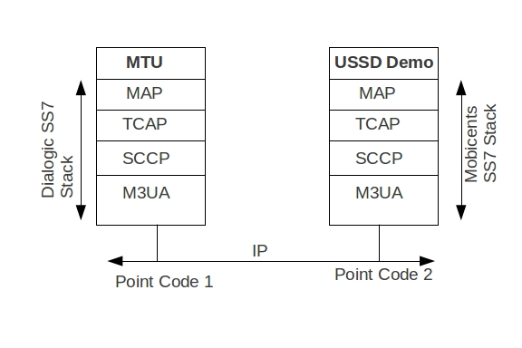

Mobicents SS7
USSD (MAP) Testing with Dialogic M3UA
Introduction
This wiki talks about how to test the Mobicents USSD Demo SLEE Application with Dialogic MAP Test Utility (MTU) tool over M3UA.
It is assumed that you have two servers connected over IP. You can also have a virtual machine setup on same host. One of the server's will have Dialogic M3UA (server A) and Dialogic SS7 stack with MTU while other server will have Mobicents M3UA (Server B) and Mobicents SS7 stack.
To understand how to install the Dialogic drivers follow the instruction given at U10SSS-SwEnv-PM.pdf
The Dialogic drivers are available at dsi-interface-protocol-stacks
The SS7 layers involved are shown below
MTU Setup
Download the modified MTU code for USSD from ussd_map_sample_code
Attached here with m3ua_mtu_config.txt and m3ua_mtu_system.txt is sample configuration and system file used for MTU. Rename these to config.txt and system.txt respectively and place it to correct folder (/opt/dpklnx/ for linux) before loading the driver. Dialogic SCCP, TCAP, MAP and MTU is loaded on host system.
Modify m3ua_mtu_config.txt as below
CNSYS:IPADDR : (=XXX.XXX.XXX.XXX) Is the IP address of machine where Dialogic Stack is running. Make suer you change this to reflect the IP address of your machine (Server A)
SNSLI:IPADDR (YYY.YYY.YYY.YYY) is the IP address of machine where Mobicents is running. Make sure you change this to reflect IP address of Mobicent's machine (Server B).
OPC: The OPC code assigned for Server A is 1
DPC: The DPC code for Server A is 2.
RC: Routing Context is fixed to 1
In-terms of SCTP, Server A acts as server and Server B will initiate the SCTP connection as client.
This example exchanges (double exchange) peer-to-peer (IPSP) M3UA messages.
Command to load drivers#
root@abhayani:/opt/dpklnx# ./gctload -d
Once the drivers are loaded don't forget to execute the mtucfg.ms7 script. This script registers the MTU with Dialogic SCCP stack
root@abhayani:/opt/dpklnx# ./s7_play -fmtucfg.ms7
Mobicents USSD Application Setup
Download the latest release of Mobicents SS7 from http://www.mobicents.org/ss7/downloads.html
Download the latest Mobicents SLEE release from http://www.mobicents.org/ss7/downloads.html
Execute the following onetime commands on Mobicents command line interface to setup the SCTP , M3UA and SCCP.
sctp association create MTRAssoc CLIENT XXX.XXX.XXX.XXX 2905 YYY.YYY.YYY.YYY 2905
Above command creates sctp association with peer ip:port XXX.XXX.XXX.XXX:2905 and host:port YYY.YYY.YYY.YYY:2905
m3ua as create MTRAS IPSP mode DE ipspType server rc 1 traffic-mode loadshare
Above command creates M3UA IPSP with double exchange
m3ua route add MTRAS 1 -1 -1
Above command add's the routing rule that for every MSU with DPC=1 use “MTRAS” for routing the message
m3ua asp create MTRASP MTRAssoc
Above command adds the new ASP which leverages already created SCTP association
m3ua as add MTRAS MTRASP
Above command adds the newly created “MTRASP” to “MTRAS”
m3ua asp start MTRASP
And finally we start the “MTRASP”. At this point M3UA messages should be exchanged between the two servers and if you are tracing message on wireshark you will notice that both servers should exchange NOTIFY indicating that AS's are in Active state now.
Make sure you change the jboss-5.1.0.GA/server/default/deploy/mobicents-ss7-service/META-INF/jboss-beans.xml and set the localSpc propert to 2 in SccpStack bean.
<bean name="SccpStack" class="org.mobicents.protocols.ss7.sccp.impl.SccpStackImpl">
<property name="localSpc">2</property>
<property name="ni">3</property>
...
...
</bean>
Test
Execute the following MTU command from MTU (Server A) machine
ussdtest -d6 -g43010008 -a43020008 -i987654321 -s"1" -U*88#
You should see the [INFO] messages in the Mobicents JAIN SLEE Server console about received USSD short codes and response sent.